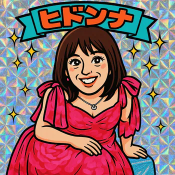

Kick ライブ配信
kick.com/hidonna ・ フォロワー 20,685
現在はオフラインです
配信が始まると自動で「LIVE 配信中」＋視聴者数に切り替わります
最新の Kick 配信アーカイブ 3本
アーカイブ一覧 ↗



HIDONNA（Kick プロフィール）
女装配信者
KICK: 配信開始！主に深夜から朝方にかけて配信
複数のプラットフォームで活動中の女装配信者。KICKでは夜更かし派の視聴者に向けて深夜・早朝の時間帯に配信を展開中。